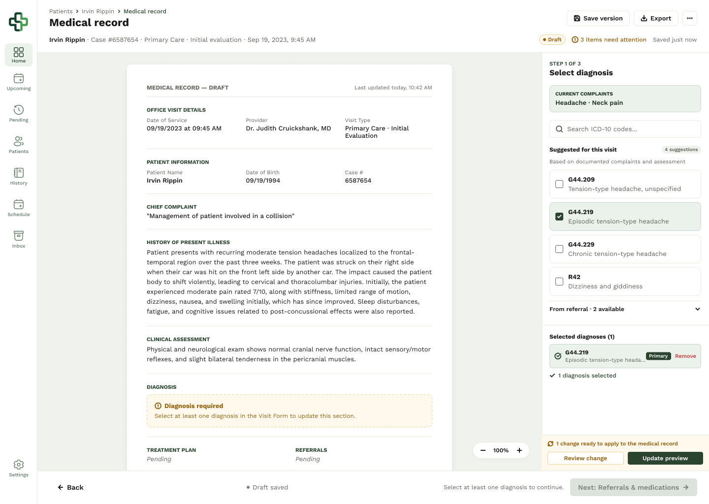

1
Thematic steps
Split the form into a few focused sections with visible progress instead of one long scroll.
A multi-role healthcare platform connecting patients, doctors and attorneys through one coordinated workflow, for people moving between medical care and legal support after a car accident.
HealthConnect is a multi-role healthcare SaaS platform built around a specific, high-stakes moment: someone injured in a car accident who needs to reach a doctor and a lawyer fast, without the process falling apart between the two.
Four roles work off the same case without seeing the same interface. The design challenge was building connected but role-specific workflows in a high-trust, data-heavy environment, where getting the information architecture wrong puts someone's care or case at risk.
I owned the product design across web and mobile: patient onboarding, appointment scheduling, video consultations, clinical documentation, CRM tools for the care team and the design system underneath them.

Over about ten months I worked with the CEO, a product manager, backend and frontend engineers and QA. I designed one connected system rather than four separate apps, and stayed with the engineers through implementation.
The heaviest patient-facing piece was the medical intake form: a long, dense questionnaire a patient had to finish before their first visit, often days after an accident. Before redesigning anything, I took it apart.
Split the form into a few focused sections with visible progress instead of one long scroll.
Merged overlapping questions and removed the ones that duplicated information already collected elsewhere.
Kept clinically required questions, changing their order and grouping, not their substance.
The hardest trade-off was the completeness doctors needed against what an injured patient could realistically finish. Beyond the form itself, I explored ways to support completion: reminders for unfinished profiles, help from care-team staff, and filling the form in together with the patient on a call.
Patient-facing journeys, doctor workflows, attorney access and internal CRM operations had to stay consistent with each other, not only polished on their own.
A calm, guided experience for registration, health information, booking and virtual consultations, not a clinical form dump.
Fast access to cases, visit details, clinical statuses, referrals and whatever is still outstanding before or after an appointment.
Visibility into relevant case progress without exposure to clinical workflows that aren't theirs to see.
CRM tools to manage patient data, assignments, warnings, communications and workflow states at scale.
A doctor's day runs from a task queue, through a structured consultation report, to a record that is reviewed rather than re-entered. These screens are exported directly from the production Figma file, unedited. The logo is a placeholder mark from the design file, not the client's branding.
Signature-ready records, incomplete documentation and multi-visit reviews come first, ahead of a flat patient list.

Chief complaint and clinical assessment feed a suggested ICD-10 list, and the record can't move to a treatment plan until a diagnosis is selected.

The full draft next to the same diagnosis panel, with complaints pulled forward and codes suggested from the referral, so signing off is a review.
No usability testing or patient-feedback round was run in this project, so there are no before-and-after numbers. Design decisions were validated with the CEO and the physician.
Intake form
Thematic steps
Restructured with visible progress and a way to save and come back. Overlaps merged, duplicates removed, clinical questions kept.
Roles
4 in one system
Patients, doctors, attorneys and the care team on one shared component foundation instead of one-off screens per surface.
Clinical documentation
Coded, not free text
A structured consultation report with chip-driven intake and suggested ICD-10 codes replaced free-text charting.
Next to measure
Completion per step
If the project continued, I'd measure where patients actually drop off in the form, rather than where I expect them to.
Designing four roles into one connected system taught me that consistency isn't about making every screen look the same. It's about keeping the same case legible from four different vantage points, without showing anyone more than their role needs to see.